序章 父亲·启程
基础说明
作为一个新玩家，了解一些最基本的东西是很有用的，下面稍微讲一点点。
打开游戏之后会看到一些很简单的英文单词界面，这不是汉化组偷懒，而是这些东西都很简单。START-开始-点击之后会从头开始新的游戏；LOAD-读取-从存档读取某个进度继续游戏；EXIT-退出-结束游戏。游戏通关后会追加一个MOVIE按钮，可以观看游戏CG。（部分奇葩版本还有一个DEBUG按钮，可以进入DEBUG模式，具体问题请自行查阅资料）。
空之轨迹有1000个存档位，当有错误操作需要读不久之前的档时，建议向前翻到第0页读取自动存档。
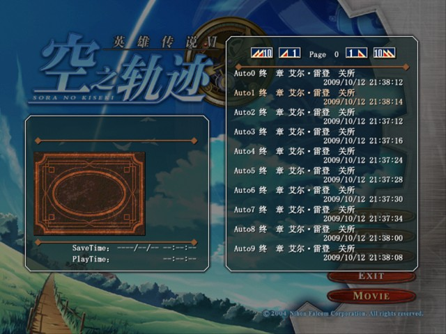
点击START开始游戏，刚开始是剧情，一路点击鼠标左键/空格键/回车键即可。当小男孩在床上说出“我的名字是……”之后播放的是游戏开场动画，若此时发生黑屏请点击SC攻略集的FAQ部分查看解决方案。
人物可控后离开家门前往洛连特市。注意右上角可以看到小地图导航，到达洛连特市之后前往游击士协会。在游击士协会与爱娜对话后去二楼与雪拉对话，听过一些基础知识后艾约被带往导力工房，接下来请按照雪拉的要求合成回路并装到主角的导力器上（请至少合成HP1和行动力1，并在艾导力器上装HP1，约导力器上装行动力1）然后给主角中任意一位的导力器开封结晶孔。导力系统介绍完毕后艾约会前往地下水路，开始实地研修。
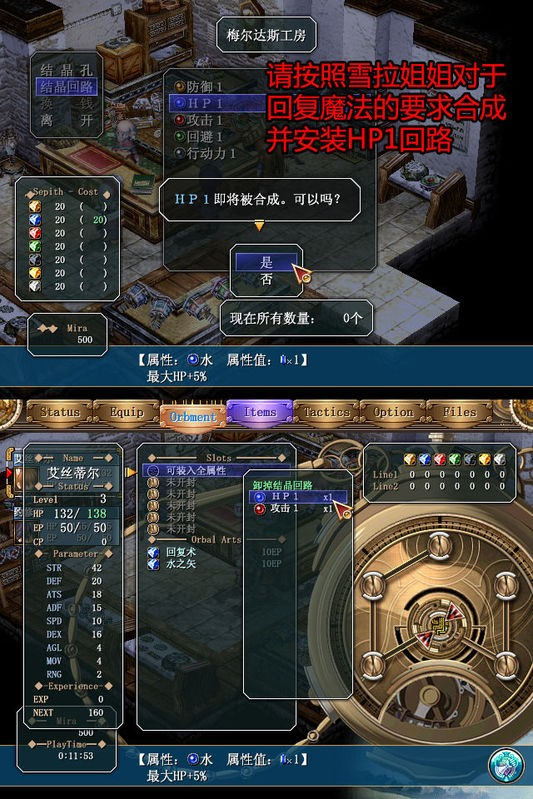
PS:在协会获得的游击士手册包含游戏大多数基础知识，且记录有游戏主线与支线任务的完成情况，请新手们务必仔细查阅（话说有些童鞋不知道手册能翻页？……）
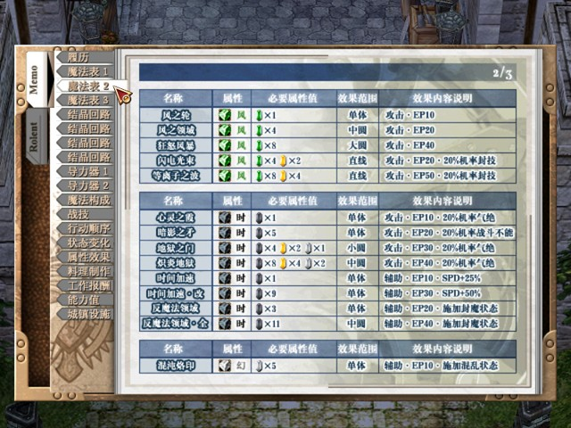
◆主线任务⑴◆实地研修·回收宝物 BP：1，500mira
此任务实质为战斗系统教学，请仔细看剧情并按照指示行动
研修结束后，前往里农杂货铺购买《利贝尔通讯》（在买书之前把身上钱全花完的话小约会帮忙付），可获得料理手册并学会枫糖曲奇的制作，并可以开始使用料理系统，料理一般需在酒店饭馆等处购买，也有宝箱开的和任务获得的。
☆【料理手册】此时可获得的料理：枫糖曲奇、炸薯条(亚班特酒馆、格鲁纳门)、花色苏打（亚班特酒馆）、洋红之眼（亚班特酒馆）、一口气薏粉（亚班特酒馆，大盘料理）
☆收集齐全料理并没有什么特别奖励……没有收集癖的话无所谓，对于新手来说用料理不仅回复效果不错（非战斗状态建议去旅馆或者免费回复点回复，比较省钱），很多料理除了回复HP外还附带特别效果，做料理也比买药便宜。
★【红耀石】在研修结束后请尽快与在亚班特酒店左边的民家里的雷特拉对话（此人所在房间内全是书架），可获得《红耀石》第１卷（此卷若错过之后还有次机会购得），若已触发解救孩子的剧情与雷特拉对话就无法获得此书了。
★此书关系到最终武器的获得，漏掉任何一卷都将无法获得最终武器，若想获得最终武器请收集齐全。
◆主线任务⑵◆保护孩子们 BP:3+1(选择和约修亚一起出击+1),1000mira
研修结束艾约准备离开洛连特市回家时发生剧情，此时艾约需经玛鲁加山道前往翡翠之塔。进入翡翠之塔2F发生剧情，选择和约修亚一起出击BP额外＋1，接着是剧情战（此战敌方都是小怪，没什么难度，请注意保护NPC）。
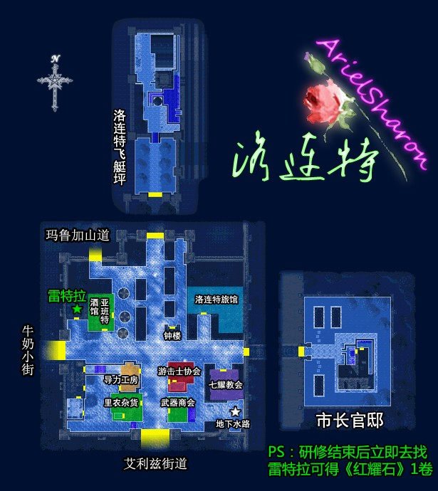
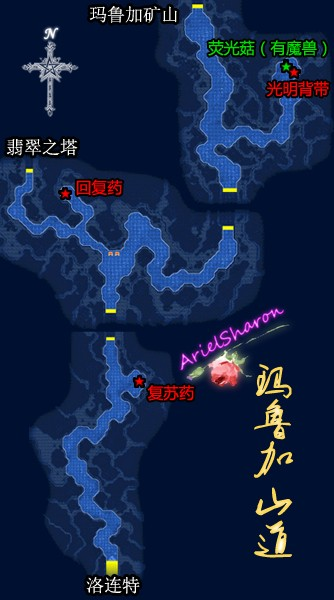
一段剧情过后（此段剧情中的选择不影响BP），艾约前往游击士协会接任务。
【利贝尔通讯】此时里农杂货铺可以买到《利贝尔通讯第一号》（此杂志收集了也没用……买来纯消遣）。
☆【料理手册】此时可获得的料理：沙拉三明治（格鲁纳门食堂）
※对于路边小怪，看准其行动路线后采取背后袭击的方式进行偷袭可以减少平时战斗的消耗
※FC练级最快的方式不是打路边小怪，而是刷羊，刷羊的问题详见本人FAQ综合篇PART3第8问（本攻略内的要素收集内含有羊的位置）
[支线任务⑴]寻找发光的石头 BP：2，30mira，肉馅丸子5个
最迟完成期限：进入玛鲁加矿山。
公告板上接到任务后，去和梅尔达斯工房后面的卡雷尔对话。之后在去里农杂货铺前冒烟的排水沟调查，接着进入地下水路（七曜教会后面，之前研修的地 方），在地下水路西北端尽头生锈铁门前找到发光的石头（结晶碎片）。交给卡雷尔之后得到肉馅丸子×5，任务完成(PS:有童鞋问过生锈铁门要怎么开，那个门一直到SC才能开的，现在打不开的)。
[支线任务⑵]牛奶小街的通缉魔兽 BP：3，600mira
最迟完成期限：触发在旅馆和奈尔的对话。
菠萝怪在牛奶小街第三个场景路边，吃火属性，用火之矢可轻松解决，被打倒后会自爆，注意站位靠后一些（Tactics栏可调整站位）。通缉魔兽任务无需在公告板上领取即可触发，击退通缉魔兽后直接报告便可。
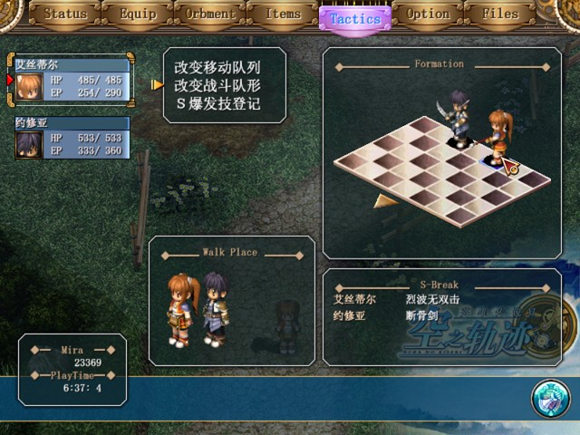
牛奶小街地图(后期有的版本可能叫米尔西街道，这是翻译处理问题)见此，请小心琥耀石护符宝箱内的跳跳猫，合出风之领域、地狱之门等魔法后去打会轻松许多，不会合魔法的请参考本人精品区回路教程，基础部分在3RD（以后的更新版基础部分会放在FCSC篇）。无范围魔法等级又低可利用走位，打法见吧内视频区视频。//水水注，回路教学在本攻略里就能找到//
{kind=link}
◆主线任务⑶◆剿灭帕赛尔农场的魔兽 BP:1+2(没有捕捉失败+2/失败一次+1),1000mira
到农场后先与西南端畜栏旁边的缇欧对话，接着再去正屋听缇欧父母的相关说明。晚上巡逻时分别触发在畜栏，田地，温室调查的剧情后就能在温室前菜地看到魔兽。之后开始捕捉魔兽，没有捕捉失败BP+2，失败一次BP+1（实际上和偷袭小怪的方法是一样的），抓到魔兽后发生剧情战。
不会看小地图的注意了……PSP的话按select键可以看小地图
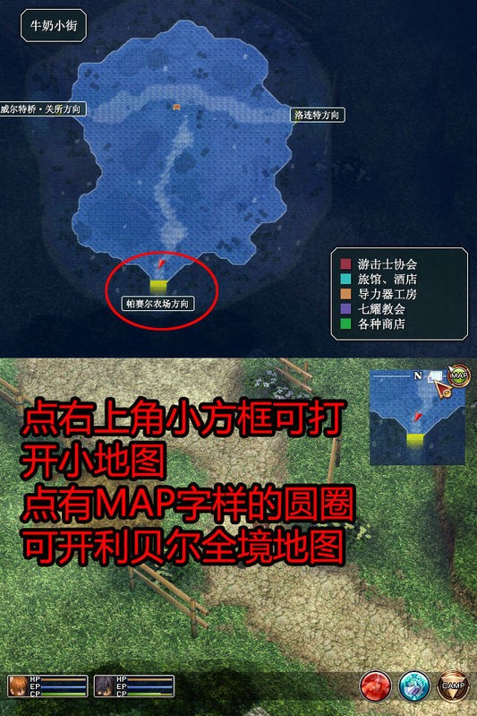
剧情过后第二天回协会报告会接到新的主线任务，同时公告板上也出现新的支线任务。此时如果任务全部完美完成，会升为8级准游击士，获得游击士奖励"情报"（回路，装备后可查看怪物详细资料，话说很多童鞋打怪时发生杯具都是因为没有仔细看怪物情报……这个回路还是装备上比较好）。
[支线任务⑶]更换路灯 BP：3 + 1 （开锁密码输入成功或交给约修亚来更换+1），妨害2，600mira
最迟完成期限：进入玛鲁加矿山。
找梅尔达斯工房的佛莱迪对话，从他那里得知开锁密码后前往牛奶小街更换路灯（第二个场景最西处路边），更换过程中出现魔兽袭击，这个时候选择小约去修灯或者小艾输对了密码（544818）BP+1。接受此委托后在完成报告前无法进入玛鲁加矿山。
[支线任务⑷]训练士兵 BP：3 +2 （战斗胜利+2BP），500+200mira(战斗胜利奖励200mira)
最迟完成期限：触发在旅馆关于奈尔的对话。
经牛奶小街前往关所，同队长对话开始训练战。胜利则获得额外BP+2，200mira的奖励。
[支线任务⑸]采蘑菇 BP：3，700mira
最迟完成期限：完成记者们的向导任务。
和在停机坪定期船售票点附近的商人奥维德对话接到任务，然后在玛鲁加山道东北端发现萤光菇（附近有一宝箱），击退魔兽后将蘑菇交给商人即可完成任务。
[支线任务⑹]采集药材 BP：3，250mira
最迟完成期限：通过威尔特桥
收集魔兽羽翼，熊刺草后和教堂的迪拜恩教区长对话。
魔兽羽翼：飞行系昆虫类型的魔兽会掉落
熊刺草：神秘森林有4份，同时在神秘森林的宝箱中还能得到兽皮制服。如果等雪拉加入队伍的时候才去将得不到兽皮制服和其中一份熊刺草，此外森林中某些小怪攻击带毒，如果不喜欢偷袭小怪又觉得经常中毒很麻烦，可以考虑去武器店买抗毒饰品装备（话说本人就没有装备防状态饰品的习惯……从来不买这些东西）。
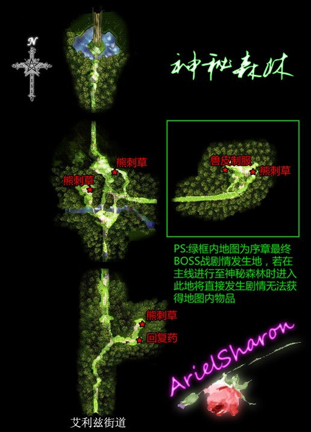
◆主线任务⑷◆克劳斯市长的委托 BP：4，1500mira
前去市区东侧的市长官邸，听完任务内容后前往城镇西北的玛鲁加山路，一路到达矿山。坐导力电梯来到地下二层找到加通矿长，接着发生剧情。解救四名矿工和一名实习矿工后回市长家完成任务。
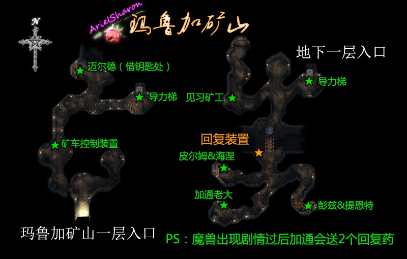
[支线任务⑺]寻找小猫 BP：2，500mira
最迟完成期限：触发在旅馆关于奈尔对话
委托人伊娜的小猫掉了，在亚班特酒馆东面的露天茶座等候帮忙。在公告板确认后，找到伊娜得知她要找的小猫安莉尔的特征，之后就能在市区里移动时搜索小猫，按照钟楼的东北面→游击士协会前→钟楼的东南面侧→七曜教会礼拜堂里→礼拜堂2F的阳台的顺序寻找，就能看到小猫，最后成功诱捕，任务完成。
[支线任务⑻]艾利兹街道通缉魔兽 BP：4，1000mira
目标魔兽在艾利兹街道的第二场景的桥上，因为之后主线剧情会延伸到神秘森林，故该任务是一定会完成的。
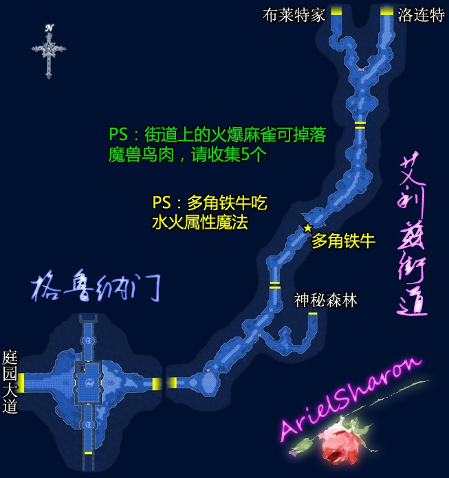
◆主线任务⑸◆记者们的向导 BP：4，2000mira
离开协会后先根据情报去旅馆服务台询问，接着在亚班特酒馆柜台前找到记者奈尔，然后去梅尔达斯工房和摄影师朵洛希汇合，最后出发前往翡翠之塔。
到塔顶后发生剧情，同每人对话2次再与小约对话，剧情后返回协会报告。之前任务都完美完成报告时会升到准游击士7级并得到奖励鹰目（回路，可看到远处的魔兽，在前期属性值也是不错的）。
奈尔的位置（话说奈尔有这么大众脸么？一堆人找不到）
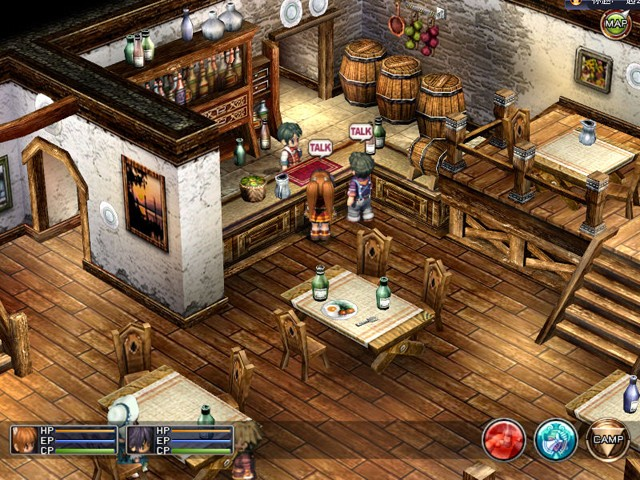
翡翠之塔地图
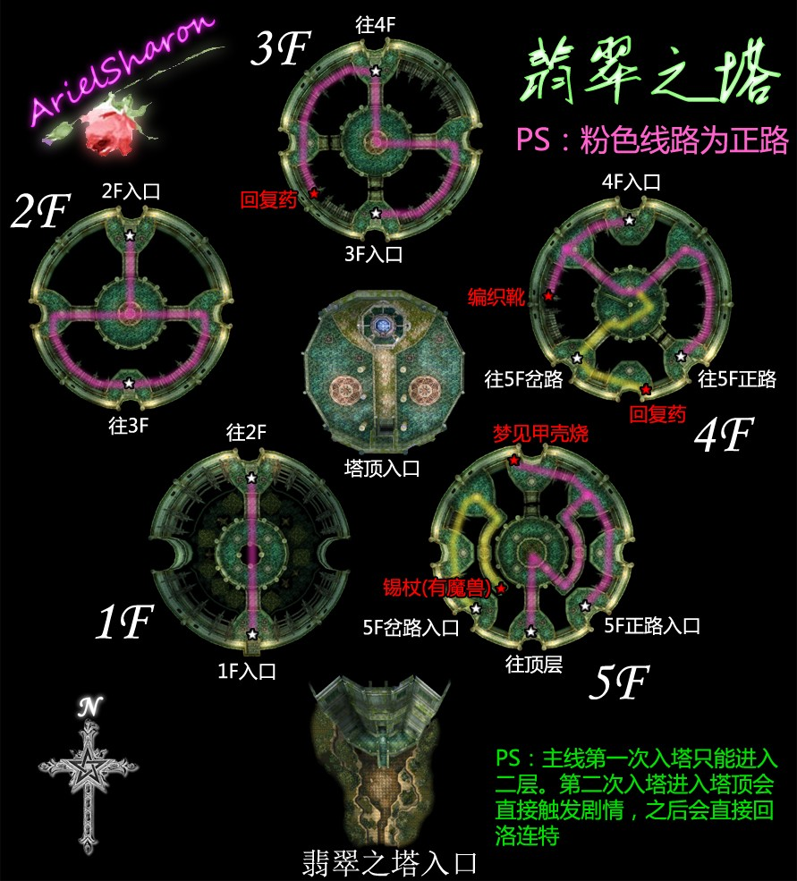
◆主线任务⑹◆市长官邸的强盗事件 BP：6 + 5（推理正确+4，唔……只好忍一下+1），3000mira
回到协会后发生剧情，接着去市长官邸，调查办公室，阳台，楼顶置物室，大门并询问了市长夫人和女佣后向雪拉扎德报告。分析报告中依次答到【七耀石】【团伙】【2楼阳台】【旅行者】可获得BP额外加4的奖励。去旅馆询问后再到飞艇坪售票处询问，之后前往神秘森林（雪拉入队）。进入森林东北角发生剧情，选择"唔……只好忍一下"BP额外+1。之后发生本章BOSS战，战前合成风之领域地狱之门等范围魔法会容易许多，此战杂兵有一定几率掉毒之刃。
BOSS战后发生剧情，序章结束。
PS:序章请在艾利兹街道打5个魔兽鸟肉（火爆麻雀掉落），一章支线任务要用，一章也可以打鸟肉，但是会麻烦一些
本章结束时的完美BP为53